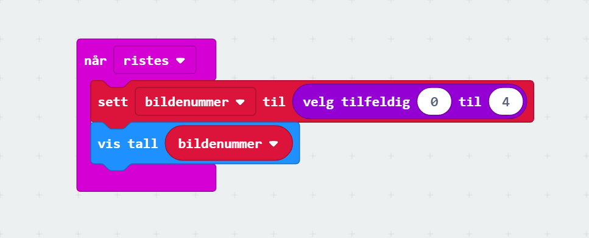
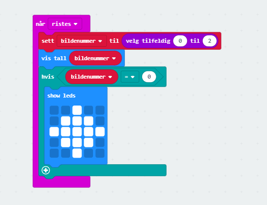
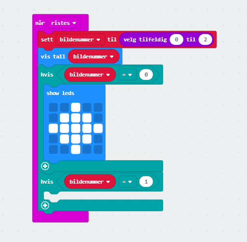
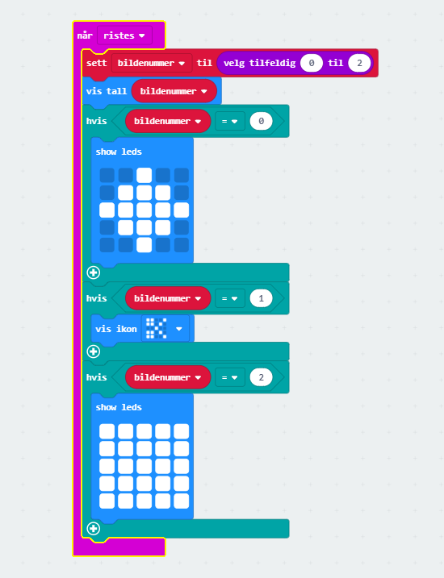

Her skal du lære å programmere micro:biten slik at du kan spille stein, saks, papir med den eller mot den.
Steg 1: Velge tilfeldig tall
Du skal få micro:biten til å velge et tilfeldig tall når du rister på den. For at du senere skal kunne bruke tallet som ble valgt, må tallet lagres i en variabel.*
Sjekkliste

Test prosjektet
Det er to forskjellige måter du kan teste micro:bit-programmer på:
Siden din kode skal reagere når du rister på micro:biten kan du simulere dette ved å klikke på den hvite prikken til venstre for teksten SHAKE på micro:bit-simulatoren. Det tilfeldige tallet som ble valgt skal vises på skjermen til micro:bit-simulatoren. Prøv flere ganger og se at tallet forandrer seg.
Det lastes nå ned en fil som heter stein-saks-papir.hex til datamaskinen din. Samtidig dukker det opp et vindu som sier at du må flytte denne filen til MICROBIT-disken. Dersom du trenger hjelp til dette så spør en av veilederne.
Steg 2: Vis det valgte trekket
Micro:biten skal vise om det er stein, saks eller papir som ble valgt.
Sjekkliste

Test prosjektet
Nå skal du teste programmet ditt ved å trykke på den hvite SHAKE-knappen.
Steg 3: Vise saks
Tegne saks når tallet 1 blir valgt.
Sjekkliste

Test prosjektet
Før du går videre er det på tide å teste programmet igjen. Det skal vise bildet av stein hvis 0 blir valgt og saks hvis tallet er 1. Fortsatt vil det bare vise tallet 2 når det er valgt.
Steg 4: Vise papir
Å Tegne papir når variabelen trekk har verdien 2 blir veldig likt steg 1 du gjorde tidligere.
Sjekkliste

Test prosjektet
Nå kan du teste programmet ditt. Det skal nå vise enten stein, saks eller papir avhengig av hvilket tall som blir valgt når du trykker på SHAKE-knappen.
Steg 5: Tøm skjermen mellom hvert spill
Når micro:biten skal velge et tilfeldig tall, så kan det hende at det samme tallet blir valgt to ganger på rad. Hvis du rister på micro:biten og den viser det samme bildet som tidligere, er det vanskelig å vite om du ikke ristet hardt nok eller om det samme tallet ble valgt to ganger på rad.
Funnet en feil? Kunne noe vært bedre? Hvis ja, vennligst gi oss tilbakemelding ved å lage en sak på Github eller fiks feilen selv om du kan. Vi er takknemlige for enhver tilbakemelding!
 PXT: Stein, saks, papir
PXT: Stein, saks, papir Sjekkliste
Sjekkliste Test prosjektet
Test prosjektet